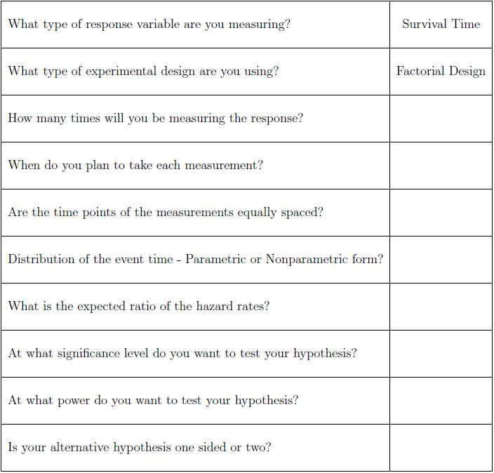

Jill wants to test the efficacy of two treatments taken separately and also taken together. She will need to use a factorial design.
So far, we know that Jill is going to use a factorial design testing the effect of two different treatments taken together and taken separately on prolonging the time until recurrence of disease activity. There are several things we need to consider in order to calculate sample size for a survival time response. Typically we are interested in testing equality between treatment groups, which in this case means testing that the ratio of hazards is one. The power of these studies depends on the number of events (recurrences in Jill's study), thus we can calculate the number of events needed to obtain a certain level of power. In order to calculate the sample size necessary for a particular level of power we need to know the expected proportion of events for our study. We may get this information from previous experience or from a pilot study.
We also need to know whether the event time distribution has a parametric or nonparametric form. Something else we need to consider when measuring survival time is censoring. If we know the expected rate of censoring then we can use this to determine the sample size needed. The formulas for this sample size calculation are rather complex and we suggest that Jill consult a statistician.
The following is a checklist that may be helpful to take with you when you consult with a statistician. This provides some information that is important to know before your consultation.

-- ErinEsp - 31 Jan 2010